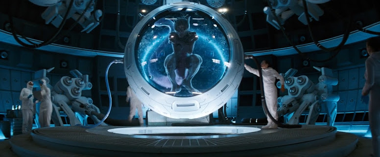
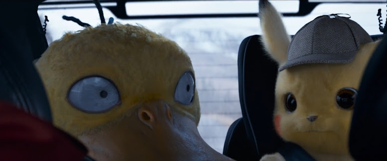

🟡 Nome Japonês: Pokémon: Great Detective Pikachu
🟡 Nome Americano: Pokémon: Detective Pikachu
🟡 Nome Brasileiro: Pokémon: Detetive Pikachu
Data de lançamento:
🎞 Japão: 03 de maio de 2019
🎞 Estados Unidos: 10 de maio de 2019
🎞 Brasil: 09 de maio de 2019
Pokémon: Detetive Pikachu é um filme live-action focado no
personagem Detetive Pikachu, que foi apresentado pela primeira vez
no jogo para Nintendo 3DS com o mesmo nome.
O filme foi revelado pela primeira vez em julho de 2016 e as
filmagens ocorreram em Londres de janeiro a maio de 2018. O logotipo
e o título do filme foram revelados durante a cerimônia de abertura
do Campeonato Mundial de 2018, em 24 de agosto de 2018.
Dirigido por Rob Letterman, Detetive Pikachu é o primeiro filme
live-action da franquia Pokémon, além de Pokémon animados em CGI. O
filme apresenta Ryan Reynolds como a voz do detetive Pikachu,
Justice Smith como Tim Goodman e Kathryn Newton como Lucy Stevens.
Em um laboratório remoto nas montanhas, Mewtwo desperta dentro de um tanque. Sentindo a presença de um homem em algum lugar do lado de fora, Mewtwo aproveita para se libertar quando os protocolos de contenção do tanque falham. O homem foge do laboratório e vai embora com Mewtwo em busca de seu carro, até que uma explosão aparentemente causada por Mewtwo joga o veículo de uma ponte.

Algum tempo depois, o vendedor de seguros Tim Goodman, de 21 anos,
está passando um tempo com seu amigo Jack em sua casa em Leaventown.
Jack leva Tim a um campo em busca de Pokémon selvagens, apesar dos
protestos de Tim de que ele não precisa de um parceiro Pokémon. Tim,
que desistiu de ser treinador após a morte de sua mãe e o
afastamento de seu pai, acaba cedendo e tenta capturar um Cubone
selvagem. Sua tentativa falha e o Cubone persegue Tim e Jack. De
volta a Leaventown, Tim recebe um telefonema informando que seu pai
Harry morreu em um acidente de carro.
Tim viaja para Ryme City para colocar os negócios de Harry em ordem.
No trajeto a bordo de um trem, ele e os outros passageiros assistem
a um vídeo de serviço público explicando a história da cidade: o
magnata bilionário Howard Clifford, que desenvolveu uma doença
degenerativa, ficou fascinado por Pokémon enquanto viajava pelo
mundo em busca de uma cura para sua condição. Howard acabou se
convencendo de que se a humanidade pudesse viver lado a lado com os
Pokémon, eles também poderiam evoluir para as melhores versões de si
mesmos, assim como os Pokémon fazem. Para cumprir sua visão, Howard
usou sua fortuna para fundar Ryme City como uma utopia onde Pokémon
vivem com humanos livres de Poké Bolas, com batalhas proibidas. Ao
chegar em Ryme City, Tim dirige-se a uma delegacia de polícia e
percebe um Psyduck observando-o. Ele se encontra com o tenente Hide
Yoshida, um antigo colega de Harry, que o consola sobre a morte de
seu pai. Yoshida exorta Tim a encontrar um parceiro como seu
Snubbull para que ele não tenha mais que ficar sozinho, mas Tim não
é receptivo a esse conselho.
Tendo recebido uma chave de Yoshida, Tim vai para o prédio onde
Harry morava. Ele novamente encontra o Psyduck e logo encontra sua
parceira Lucy Stevens, que está investigando as circunstâncias em
torno da morte de Harry, apesar de sua posição como blogueira de uma
coluna fofa para a rede de notícias CNM. Lucy tenta obter
informações de Tim, mas ele recusa e vai para o apartamento de
Harry. Ele se depara com uma sala feita para lembrar o quarto de sua
infância, bem como uma carta não enviada de Harry pedindo-lhe para
se mudar para Ryme City para que eles possam se reconciliar. Mais
tarde, enquanto procurava na mesa de Harry, Tim encontra um frasco
de gás roxo rotulado "R", que ele acidentalmente abre. Ele exala o
gás por uma janela, sem saber que um grupo de Aipom está por perto e
exposto aos vapores.
Tim ouve barulhos estranhos e encontra um Pikachu usando um chapéu
de detetive que, para seu choque, fala a linguagem humana. Ele mal
tem tempo de entender o discurso de Pikachu antes que os Aipom
invadam o apartamento, enlouquecidos pela exposição ao gás. Tim e
Pikachu acabam sendo perseguidos até o telhado do prédio, de onde
escapam para a rua usando uma rampa de lixo. Assim que o Aipom se
acalma e sai, eles vão para um mercado de rua próximo, em que Tim
tenta fazer outras pessoas ouvirem Pikachu falando, mas nenhum deles
consegue ouvir o Pokémon dizer qualquer coisa além de seu nome, como
qualquer criatura faria.
Tim e Pikachu vão ao Café Hi-Hat, em que Pikachu explica que está
com amnésia, mas consegue se lembrar de duas coisas: ele era
parceiro de Harry como detetive e eles estavam investigando um caso
envolvendo a substância "R". Tim relutantemente concorda em ajudar
Pikachu a resolver o caso, já que Pikachu acredita que Harry está
vivo e encontrar a verdade irá ajudá-los a localizá-lo. Eles vão às
instalações do CNM para obter informações sobre o caso com Lucy. Lá,
eles a encontram trabalhando no set de um comercial para o próximo
desfile Pokémon envolvendo Howard Clifford e seu filho Roger. Howard
sai após uma discussão com seu filho, e Roger descarta os esforços
de Lucy para chamar a atenção para a história de R. Tim e Pikachu se
encontram com Lucy e descobrem que Harry tinha uma fonte em Ryme
Wharf de onde ele estava obtendo informações.
Viajando para lá, eles encontram um Mr. Mime que eles rapidamente
percebem ser a fonte de Harry. Mime inicialmente não coopera com
eles, mas quando Tim brinca com sua mímica e finge derramar gasolina
nele, ele concorda em ajudar. Ele revela que R estava sendo
distribuído em um lugar chamado "Roundhouse", que Tim e Pikachu
descobriram ser uma instalação subterrânea onde batalhas Pokémon
ilegais acontecem. Sebastian, o operador do Roundhouse, reconhece
Pikachu e confronta os dois com raiva, dizendo a eles que Pikachu
uma vez danificou seu casaco e deixou cicatrizes em seu precioso
Charizard em batalha. Ele se recusa a fornecer qualquer informação a
menos que Pikachu e Charizard tenham uma revanche. No entanto, antes
de a batalha começar, Sebastian dá a Charizard uma dose de R,
fazendo com que ele fique furioso. Para piorar as coisas, Pikachu se
vê incapaz de se lembrar de nenhum de seus movimentos. Tim interfere
na batalha para proteger Pikachu, e quando Sebastian entra no
ringue, ele é derrubado por Charizard e quebra os frascos de R
dentro de seu casaco.
O gás se espalha por toda a sala, fazendo com que todos os Pokémon
presentes entrem em frenesi. No meio do caos, Tim exige respostas e
Sebastian diz a ele que R estava sendo administrado por alguém que
ele conhece apenas como "o médico". Logo depois, um Gyarados
recém-evoluído derrota Charizard com uma Hidro Bomba, inundando Tim
e Pikachu para fora do edifício no processo. Eles são presos pela
polícia de Ryme City e levados a Yoshida, que mostra a filmagem do
acidente de Harry para convencê-los de sua morte.
Abatidos após o encontro com Yoshida, Tim e Pikachu são logo
chamados ao escritório de Howard por sua enigmática assistente, Sra.
Norman. Howard explica suas crenças sobre Pokémon e humanos ajudando
uns aos outros ao evoluir seu Eevee para Flareon, e revela que Harry
estava trabalhando em seu nome para rastrear a fonte de R, cujo
cérebro ele identifica como Roger. Ele confirma que Harry está
realmente vivo, mostrando a eles um holograma do acidente, que
revela a eles que Harry rastejou dos destroços apenas para ser
levado por Mewtwo, deixando Pikachu para trás. Howard diz a Tim e
Pikachu que se eles encontrarem Mewtwo, eles encontrarão Harry. No
entanto, ele os alerta para tomarem cuidado com Roger, que ele diz
estar no controle da mídia e da polícia.
Continuando a investigação, a dupla se encontra com Lucy no Café
Hi-Hat. Ela mostra a eles documentos relacionados à misteriosa
destruição do laboratório nas montanhas, que foi designado como
local perigoso após a explosão. As circunstâncias inexplicáveis
sobre a destruição do laboratório despertaram a suspeita do grupo,
assim como a história da cientista-chefe Dra. Ann Laurent, que era
uma neurologista Pokémon que teve sua bolsa de pesquisa revogada por
experimentar Pokémon controladores de mente antes de trabalhar lá.
Eles se dirigem às ruínas do laboratório, sem saber que Roger os
está seguindo com uma equipe de seus capangas.
No laboratório, o grupo descobre que o Greninja e o Torterra que
foram testados ainda estão armazenados lá. Pikachu encontra um
computador funcionando no laboratório principal, que ele e Tim usam
para acessar os registros de vídeo holográfico da atividade de
Laurent. Eles descobrem que Laurent criou uma faixa de ligação
neural para uso humano e extraiu o DNA de Mewtwo para criar o soro
R, o que provoca uma fúria incoerente em seu usuário devido a uma
propriedade única da composição genética de Mewtwo. Ao voltar mais
longe no arquivo, eles descobrem que Harry estava trabalhando para
os benfeitores de Laurent, com a tarefa específica de ajudar a
localizar Mewtwo para que pudesse ser capturado. Roger, que os tem
monitorado em seu laptop usando as câmeras de segurança do
laboratório, libera remotamente o Greninja geneticamente modificado
para atacar o grupo. Eles são perseguidos implacavelmente até que
Psyduck use todo o seu poder para explodir Greninja.
No entanto, eles logo se encontram presos em meio a um grupo de
Torterras do tamanho de uma montanha. Eles mal conseguem sobreviver,
e Pikachu é gravemente ferido em sua fuga. Tim se lembra
desesperadamente do conselho anterior de Pikachu sobre como os
Pokémon entendem os humanos e é capaz de convencer um Bulbasaur a
ajudar. Bulbasaur, junto com vários outros de suas espécies e vários
Morelull, trazem Tim para um vale onde encontram Mewtwo. Mewtwo cura
os ferimentos de Pikachu e mostra a ambos uma visão de Pikachu
sabotando a segurança do laboratório, permitindo a fuga de Mewtwo.
No entanto, antes que ele revele a verdade sobre o desaparecimento
de Harry e suas intenções, Roger o captura com máquinas e o leva em
seu caminhão. Tim e Pikachu se reencontram com Lucy, mas Pikachu
abandona Tim, acreditando que ele vendeu Harry para que Mewtwo
pudesse se vingar de sua captura. Mais tarde, ele se depara com a
ponte onde ocorreu o acidente e descobre a prova de que foi o
Greninja que causou a queda, não Mewtwo. Isso o leva a perceber que
Howard tem enganado Tim o tempo todo.
Tim e Lucy correm de volta para Ryme City, temendo que Roger planeje
atacar o desfile Pokémon para se vingar da negligência de seu pai.
Lucy se disfarça de repórter e tenta falar com o prefeito de Ryme
City, mas Roger aparece e ela foge. Tim, entretanto, vai ao
escritório de Howard, apenas para descobrir ele usando a faixa
neural que Laurent criou. Percebendo tarde demais que Howard, e não
Roger, foi o mentor da trama, Tim foi impotente para impedir Howard
de fundir sua mente com o corpo de Mewtwo capturado. Howard diz a
Tim que ele planejou o enredo como uma cura não apenas para si
mesmo, mas para toda a humanidade.
Harry começou a investigar o caso e rastreou R até o Roundhouse e
depois a Laurent, forçando Howard a providenciar para que ele fosse
morto. Howard joga Tim de lado com suas novas habilidades
telecinéticas, voa para a cidade e rompe os balões do desfile,
liberando o R dentro dos civis e Pokémon abaixo. Inúmeras pessoas,
entre elas Lucy e Yoshida, são fundidas em seus Pokémon por Howard
como o estágio final de seu plano. Pikachu chega e convoca seus
poderes para envolver Howard na batalha. Enquanto isso, Tim volta a
si e percebe que pode parar Howard removendo o link neural, mas
antes que ele possa fazer isso, ele descobre Roger amarrado e
amordaçado dentro do armário do escritório.
O "Roger" que capturou Mewtwo chega e se transforma em Sra. Norman,
que tira os óculos escuros para revelar que ela é, na verdade, uma
Ditto. Ela se transforma em um Loudred e ataca Tim com Hipervoz
antes de assumir a forma de Lucy e lutar contra Tim com as próprias
mãos. Ela então se torna um Machamp e dá um soco em Tim até que ele
acabe pendurado para fora da janela do escritório, e então se torna
um Cubone para tentar fazê-lo perder o controle. Ele quase cai, mas
é resgatado quando Roger acerta a Sra. Norman pela janela com uma
vara e o ajuda a se levantar. Ela logo retorna disfarçada de
Braviary, no entanto, e assume a forma de um Bouffalant para dar uma
cabeçada em Roger, nocauteando-o. A seguir, a Sra. Norman se
transforma em Charizard e tenta matar Tim, mas ele consegue
borrifá-la com uma mangueira conectada a um tanque de R, fazendo com
que ela mude de forma incontrolável antes de derreter em
inconsciência em sua verdadeira forma Ditto.
Howard se recupera de ser atingido pelo Investida Trovão de Pikachu
e o captura, zombando dele por pensar que um Pikachu poderia
derrotar Mewtwo em batalha. Pikachu rebate que ele estava apenas
mantendo Howard ocupado, e Howard é incapaz de impedir Tim de
remover a faixa de ligação neural de seu corpo humano. Com a ligação
cortada, Howard retorna ao seu corpo e Mewtwo cai brevemente
inconsciente, mas se recupera rápido o suficiente para salvar
Pikachu de bater no chão. Tim corre para se reunir com eles, e
Mewtwo se livra de todos os R restantes antes de separar os humanos
e Pokémon. Howard é preso e Roger expressa desapontamento consigo
mesmo por não estar ao lado de seu pai. Ele concede a Lucy uma
promoção a repórter diante das câmeras e dá a ela a tarefa de
apresentar um relatório sobre os crimes de Howard. Tim e Lucy
decidem buscar um relacionamento. Finalmente, Mewtwo revela que,
para salvar a vida de Harry, ele fundiu Harry e Pikachu e esperou
pela chegada de Tim para que os ferimentos de Harry pudessem ser
curados. Com sua tarefa concluída, Pikachu é separado de Harry.
Algum tempo depois, Harry e Pikachu vão à estação de trem para se
despedir de Tim, mas ele decide ficar em Ryme City com seu pai e
seguir a carreira de detetive. Tim sugere pegar um café juntos, e
Harry diz que foi a única coisa em que ele pensou recentemente.
🟡 Este filme tem o maior orçamento de produção de qualquer filme Pokémon, totalizando 150 milhões de dólares.
🟡 Este é o filme de Pokémon de maior bilheteria, com vendas superiores a 433 milhões de dólares em agosto de 2019.
🟡 Os Greninja usam espadas d'água exatamente como no jogo Super Smash Bros.
🟡 Ao tentar acalmar Psyduck, o Detetive Pikachu grita, "Serenidade agora!" Esta é uma referência ao episódio de Seinfeld de 1997 "The Serenity Now", no qual Frank Costanza deve gritar a frase sempre que estiver com raiva, a fim de baixar sua pressão arterial.
🟡 Enquanto é arranhado por Lucy, o Detetive Pikachu diz "Santa mãe de Arceus", marcando a primeira vez que a palavra "Arceus" é usada como um substituto para "Deus" em um filme oficial da franquia Pokémon.
🟡 Tim se refere a múltiplos Aipom como "Aipoms" e Pikachu diz "Greninjas". Isso é incorreto, pois os nomes dos Pokémon são iguais tanto no singular quanto no plural.
🟡 Os Greninja são afetados pelo ataque psíquico de Psyduck, embora sejam do tipo Sombrio.
